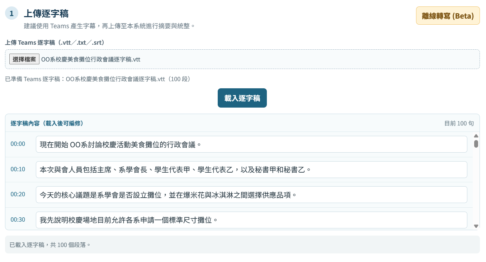
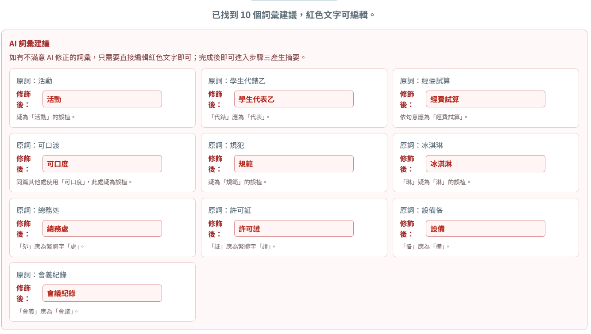

MeetingTutor · A4 Quick Guide
把逐字稿變成可執行的會議記錄
情境示範：OO系開會討論校慶攤位，要在爆米花與冰淇淋之間做選擇。
本次會議情境
OO系系學會召開行政會議，討論校慶是否設立美食攤位，以及爆米花、冰淇淋的健康、經費、可口度、人力與設備風險。
主席系學會長學生代表甲、乙秘書甲、乙你要得到的成果
一份摘要：快速掌握討論與暫定結論。
一張清單：列出負責人、期限與待確認事項。
四步完成整理
1上傳逐字稿選擇 .vtt、.txt 或 .srt
2修正詞彙確認 AI 找出的錯字
3產生摘要選模板、補提示、整理
4檢查成果核對摘要與待辦清單
1
上傳 OO系會議逐字稿
在「上傳逐字稿」區塊選取會議檔案，按下載入逐字稿。畫面會顯示時間軸與段落數，方便先確認檔案是否完整。
本例使用 100 段的 `oo-department-campus-festival-food-stall-transcript.vtt`，內容涵蓋爆米花、冰淇淋、健康、經費與可口度。

畫面重點：選擇檔案 → 確認已載入段落數 → 載入逐字稿。
2
先修正 AI 找出的詞彙
若逐字稿含有同音或辨識錯字，系統會以紅色列出建議。直接編輯紅色文字，完成後再進入摘要。
| 逐字稿中的錯字 | 建議修正 | 本例用途 |
|---|---|---|
| 校慶活勳、冰淇琳 | 校慶活動、冰淇淋 | 保留議題名稱與品項正確 |
| 經偻、可口渡 | 經費、可口度 | 讓比較面向可被摘要辨識 |
| 總務処、許可証、設俻 | 總務處、許可證、設備 | 避免待辦對象與風險誤讀 |
| 代錶、衛生規犯、會義 | 代表、衛生規範、會議 | 讓人名與紀錄欄位一致 |

畫面重點：看到「原詞」與「修飾後」後，將不正確的紅色文字改成正確詞語。